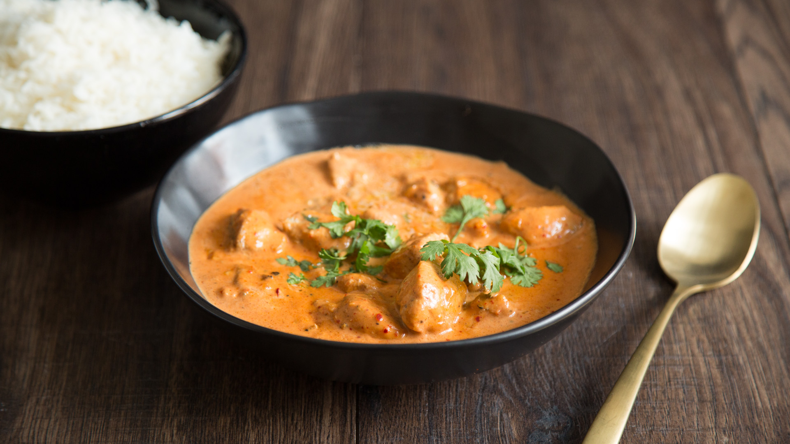

Zutaten:
- 1
- 1
- 6
- 3
- 1
- 1
- 2 Zehen
- 2 Tl gehackt
- 40 g
- 1 Dosen
- 100 g
- 50 ml
- 500 ml
- 1 Tl
- etwas
- 1 Tl
- 3 Tl
- 1 Tl
- Zimtstange
- grüne Chili
- Kardamomkapseln
- Nelken
- Lorbeerblatt
- Zwiebeln
- Knoblauch
- Ingwer
- Cashewnüsse
- Stückige Tomaten
- Butter
- Sahne
- Wasser
- Zucker
- Salz
- Garam Masala
- Chilipulver
- Bockshornklee gemahlen
Kochmodus:
Zubereitung:
- Eine Pfanne auf mittlerer bis hoher Hitze erhitzen.
- 6 Kardamomkapseln andrücken und zusammen mit 1 grüne Chili, 1 Zimtstange und 3 Nelken für 3–4 Minuten rösten.
- 50 g Butter und 1 Lorbeerblatt hinzufügen und weitere 2 Minuten rösten.
- In der Zwischenzeit 1 Zwiebel würfeln. Aus 2 Knoblauchzehen und Ingwer eine Paste herstellen – entweder mit der Reibe oder der breiten Seite eines Messers zerdrücken.
- Die Gewürze aus der Butter entfernen. Nun die Zwiebel und die Knoblauch-Ingwer-Paste bei mittlerer Hitze in der Butter anschwitzen.
- Mit 1 Dosen stückigen Tomaten ablöschen. Die Dosen zur Hälfte mit Wasser füllen, ausschwenken und ebenfalls in die Pfanne geben.
- Alles für 5–10 Minuten köcheln lassen.
- 40 g Cashewnüsse, 3 TL Chilipulver und 1 TL Zucker hinzufügen. Die Sauce so lange einkochen lassen, bis sie am Boden leicht ansetzt.
- Wenn die Sauce stark reduziert ist, 500 ml Wasser hinzufügen, einmal aufkochen und im Mixer fein pürieren.
- Die Sauce durch ein feines Sieb streichen.
- Mit 1 TL Garam Masala, 1 TL gemahlenem Bockshornklee, Salz und Butter abschmecken.
- Zum Schluss mit 50 ml Sahne verfeinern und warm servieren.